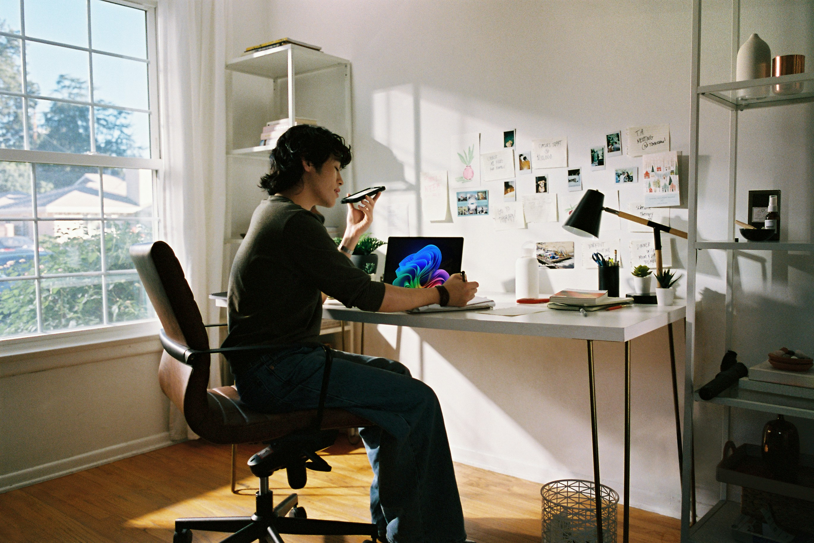

Student Testimonial
Joining Tech4pride has been even more so than a learning experience, its been life-changing. Along side learning everything about frontend development and building fully fleshed out websites, I met amazing people that have shaped my mind going forward.

